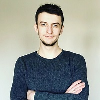

PERSONAL DATA:
- Name: Andrii Mandryk
- Address: 10/4 Tselevycha str., apt.51, Ivano-Frankivsk, Ukraine
- Date of Birth: 16 September 1992
- Marital Status: married
- Phone: +380986165190
- Email: Andrew_mand@ukr.net
EDUCATION:
2009 – 2014
- Ivano-Frankivsk National Technical University of Oil and Gas Branch: Department of Oil and Gas Pipelines
and
Storage Facilities
- Degree: Specialist
WORK EXPERIENCE:
20014 – 2016
- Engineer - designer at a gas company, Ivano-Frankivsk
2016 – 2018
- Chief State Inspector of the Department of State Labor in Ivano-Frankivsk region
2018 – 2019
- Lead gas engineer at JOINT-STOCK COMPANY “Tysmenytsagaz”
2019
- Technical support agent in GotYourBackSupport Company
You can find me here:
Instagram profile